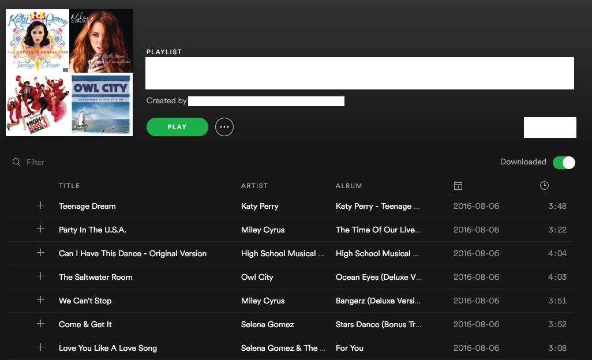
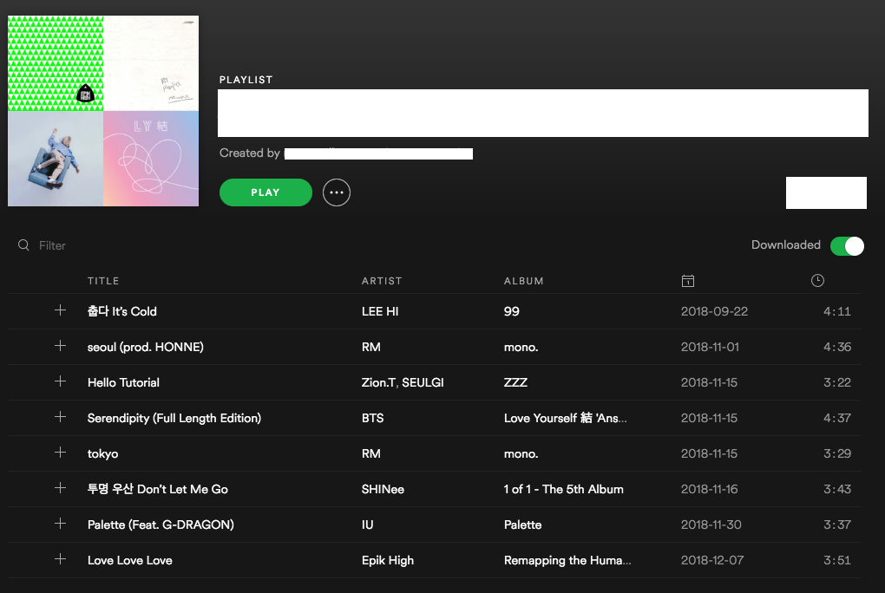
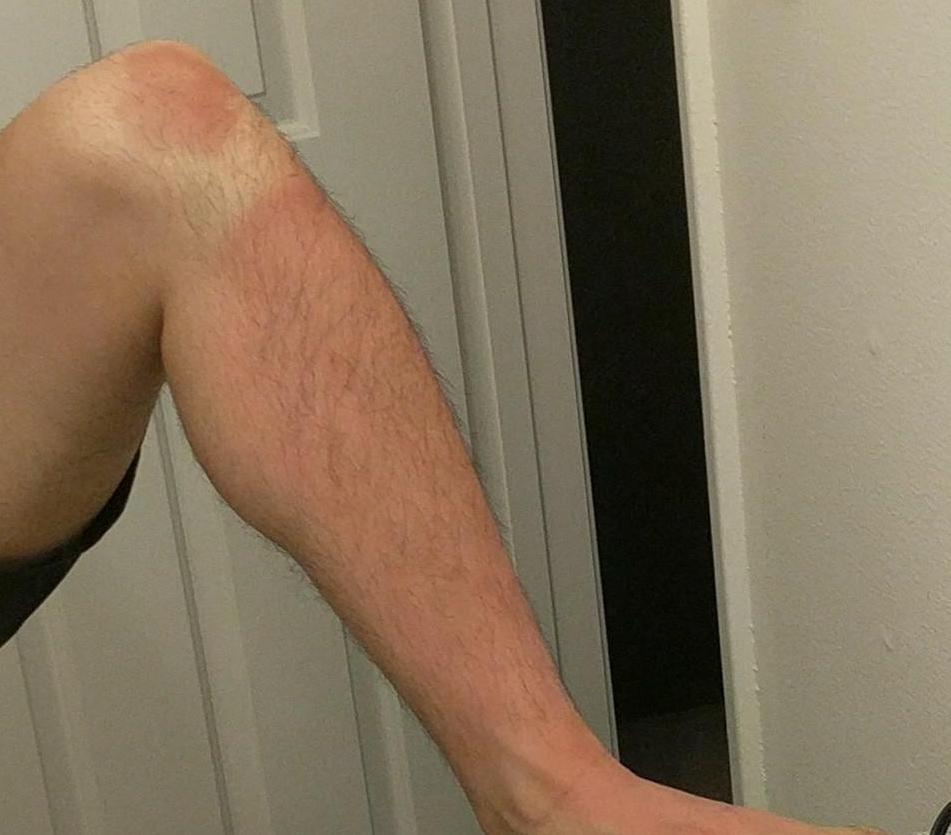
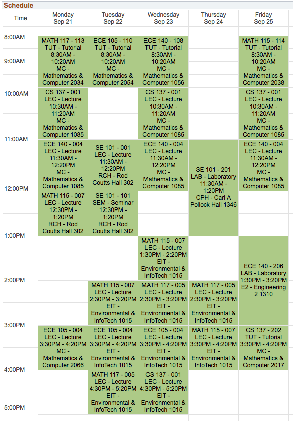

Raymond Blogs
Things I Have Learned in University So Far
December 25, 2018
My university experience has taught me a lot. Here are a few:
Studying to Kpop
When I study or do homework, I enjoy listening to some music in the background. In high school, I would listen to American pop music while I did homework. The problem is that I love music, so I would sing along sporadically. How can I not sing when Adam Levine picks up the payphone? This was previously acceptable because my workload in high school was significantly less than my workload in university. In university, I also needed to actually focus on my work to get my work done. I could not do this anymore.
I had also tried classical music in the past, but it was too soothing. Perhaps I should have been listening to Fantasie Impromptu instead of Claire De Lune in retrospect. Nonetheless, I decided to give Kpop chance since I cannot speak Korean and hopefully would not sing along.
I initially remembered a few artists that I had listened to in the past such as Big Bang, SHINee and 2NE1. I eventually stumbled upon Blue by Big Bang and realized that this was the perfect study music. It was a song that I genuinely enjoyed and could listen to mindlessly. I continued to rotate music that had a similar style and have listened to this genre while doing work during my study/co-op terms for a couple years now. This was the playlist that got me through my concurrency and feedback control systems assignments in 3B:
Wear Sunscreen
I've only been badly burned by the sun once in the past. I thought I learned my lesson after my face shed a few layers during high school when I neglected sunscreen for a day. Although my face ached, I was able to go to class and function.
I forgot what I learned when I visited Tahoe during a co-op term for a weekend during Summer 2018. It was very sunny outside.

We decided to go kayaking during the trip and I was wearing a pair of track pants at the time. I rolled them up without applying sunscreen on legs and we kayaked for the next 6 hours. At first, I didn't feel anything other than a slight tingly sensation in my legs, so I thought nothing of it. I went home and saw that my legs were slightly burnt, but once again, I thought it was a trivial burn.
I have never been so wrong in my life. The day after I was burned, I tried to wake up early in the morning to exercise. I slid off my bed and tried to walk to my the bathroom. At that point, I felt like a million needles were piercing my legs. Needless to say, the burn was more severe than I had initially thought. I had to take a few days off of work because I could not walk at all. My coworkers thought it was ludicrous that sunburn could put a person out of commission for a few days. But once they saw the burn, they understood. I always periodically apply sunscreen now. This is how the burn looked two weeks later:
Managing My Time
I didn't realize the importance of time management in high school. I would do my homework while watching Spongebob and Fairly Odd Parents everyday after school. Although I was working at a tenth of my capacity, I could still manage to finish my homework. However, during first year of university, I really needed to begin to focus when doing work. I have never been so exhausted going to class until university. My schedule for first year included introductions to classical mechanics, circuits, linear algebra, calculus and computer science.
During first year, I realized the importance of remaining focused while doing work. The constant context switching from my homework to a random conversation with a friend was not an effective way of studying. I essentially learned to focus.
However, I didn't truly realize the importance of time management until my 3B term during Fall 2018. I was swamped with stuff not related to school for the first two months of school and fell extremely behind in class. It got to the point where my assignment submissions would essentially be a plain text document that stated "I could not finish this assignment".
Now, I actually use a calendar to plan my day. I mentally create milestones and goals where I do not allow myself to do other things until the goal is achieved. The milestone system holds me accountable for my actions and ensures I remain productive while I work. I also began waking up at 5:30AM and accomplishing tasks immediately. Waking up early is vital because I cannot be distracted by my peers who are asleep.